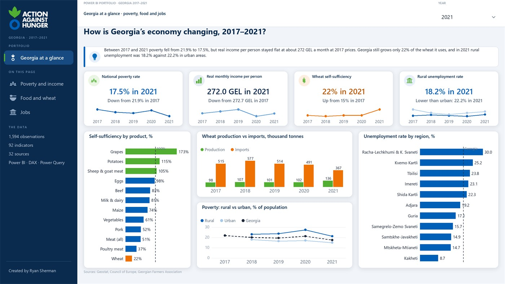

Khevsureti: population, place, and folklore
A master’s research dashboard exploring demographic decline and folklore in Georgia’s high Caucasus, from 1876 to 2014.
Dashboard previews exploring population, livelihoods, history, and place.
A master’s research dashboard exploring demographic decline and folklore in Georgia’s high Caucasus, from 1876 to 2014.

A view of Georgia’s changing economy, connecting poverty and income with food self-sufficiency and regional employment.

A geographic and social profile of Chin State, Myanmar, pairing township population maps with indicators of rural livelihoods and access to services.